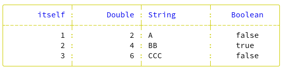
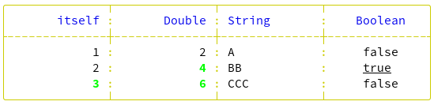

Table of contents
- Getting started
- Borders
- Row types
- Rules
- Display frequency and repeated title
- Extracting - Formatting - Styling
- Packing
- Summary
- Transpose
- Columns selection and ordering
- Tips and tricks
Getting started
In this tutorial, we'll start with a very simple example, which we'll build on as we go along to gradually discover all the possibilities offered by the Tablo library.
Here's a first look at how to use Tablo to lay out a simple table from an array of integers.
require "tablo"
table = Tablo::Table.new([1, 2, 3]) do |t|
t.add_column("itself", &.itself)
t.add_column(2, header: "Double") { |n| n * 2 }
t.add_column(:column_3, header: "String") { |n| ('@'.ord + n).chr.to_s * n }
end
puts tableor
require "tablo"
table = Tablo::Table.new([1, 2, 3])
table.add_column("itself", &.itself)
table.add_column(2, header: "Double") {|n| n * 2}
table.add_column(:column_3, header: "String") { |n| ('@'.ord + n).chr.to_s * n }
puts tableoutput:
+--------------+--------------+--------------+
| itself | Double | String |
+--------------+--------------+--------------+
| 1 | 2 | A |
| 2 | 4 | BB |
| 3 | 6 | CCC |
+--------------+--------------+--------------+A great deal of information can already be extracted from this simple example:
- The only parameter required to create the table is the data source (the array of integers), but to produce a result, you obviously need to add columns.
- Any number of columns can be defined, each requiring an identifier and a proc for extracting data from the source and, if necessary, modifying its type and value.
- The column identifier can be of type
String,IntegerorSymbol. By default, the column header takes the value of the identifier, unless the optionalheaderparameter is used. - Columns are the same width.
- We can see two types of row: header and body.
- Columns of numbers are aligned to the right, and columns of text to the left, for both headers and body.
- Default borders use the classic
Asciitype.
Borders
The Border structure lets you create frames around rows and columns, using ascii and/or graphic characters.
A set of predefined borders is available, including Ascii,
ReducedAscii and Fancy, but you can also define your own border
types (see API for details).
Default border type is Ascii, but to change a table's border type,
simply assign the desired definition to the border parameter when
initializing the table. So, for example, to set the ReducedAscii
border type, you can do:
table = Tablo::Table.new([1, 2, 3],
border: Tablo::Border.new(Tablo::Border::PreSet::ReducedAscii)) do |t|or even, more simply:
table = Tablo::Table.new([1, 2, 3],
border: Tablo::Border.new(:reduced_ascii)) do |t|-------------- -------------- --------------
itself Double String
-------------- -------------- --------------
1 2 A
2 4 BB
3 6 CCC
-------------- -------------- --------------Row types
Header and Body
The Header and Body data row types form the basis of table formatting. Other types can be optionally added to establish the final layout: the Group row type and Heading row types (Title, SubTitle and Footer).
Group
Adjacent columns can share a common header, above the column headers themselves. This common header constitutes a Group row type.
To create a Group row, simply define a common header after each set of adjacent columns to be grouped.
require "tablo"
table = Tablo::Table.new([1, 2, 3]) do |t|
t.add_column("itself", &.itself)
t.add_column(2, header: "Double") {|n| n * 2}
t.add_group("Numbers")
t.add_column(:column_3, header: "String") { |n| ('@'.ord + n).chr.to_s * n }
t.add_group("Text")
end
puts tableOutput:
+-----------------------------+--------------+
| Numbers | Text |
+--------------+--------------+--------------+
| itself | Double | String |
+--------------+--------------+--------------+
| 1 | 2 | A |
| 2 | 4 | BB |
| 3 | 6 | CCC |
+--------------+--------------+--------------+By default, Group headers are centered, but their alignment can be modified
globally at table initialization time with the group_alignment parameter,
or locally for a given group with the alignment parameter.
require "tablo"
table = Tablo::Table.new([1, 2, 3],
group_alignment: Tablo::Justify::Left) do |t|
t.add_column("itself", &.itself)
t.add_column(2, header: "Double") { |n| n * 2 }
t.add_group("Numbers")
t.add_column(:column_3, header: "String") { |n| ('@'.ord + n).chr.to_s * n }
t.add_group("Text")
end
puts tableOutput:
...
| Numbers | Text |
...or
require "tablo"
table = Tablo::Table.new([1, 2, 3]) do |t|
t.add_column("itself", &.itself)
t.add_column(2, header: "Double") { |n| n * 2 }
t.add_group("Numbers")
t.add_column(:column_3, header: "String") { |n| ('@'.ord + n).chr.to_s * n }
t.add_group("Text", alignment: Tablo::Justify::Left)
end
puts tableOutput:
...
| Numbers | Text |
...Note that the group header can be empty, and that an empty group header is automatically created if the last column group is not specified.
Group and header are intimately linked and only separated by a horizontal
line. For custom rendering, this line can be omitted by setting the Table
omit_group_header_rule parameter to true.
require "tablo"
table = Tablo::Table.new([1, 2, 3],
omit_group_header_rule: true) do |t|
t.add_column("itself", &.itself)
t.add_column(2, header: "Double") {|n| n * 2}
t.add_group("Numbers")
t.add_column(:column_3, header: "String") { |n| ('@'.ord + n).chr.to_s * n }
t.add_column(:column_4, header: "Boolean") {|n| n.even?}
t.add_group("Other data types")
end
puts tableOutput:
+-----------------------------+-----------------------------+
| Numbers | Other data types |
| itself | Double | String | Boolean |
+--------------+--------------+--------------+--------------+
| 1 | 2 | A | false |
| 2 | 4 | BB | true |
| 3 | 6 | CCC | false |
+--------------+--------------+--------------+--------------+Headings
A formatted table can optionally include a title, subtitle and footer. Each of these elements is of type Heading (see API).
By default, when the table is initialized, their value is nil, so nothing is
displayed.
To display a title (or subtitle or footer), simply specify its value when initializing the table.
require "tablo"
table = Tablo::Table.new([1, 2, 3],
title: Tablo::Heading.new("Data types alignment")) do |t|
t.add_column("itself", &.itself)
t.add_column(2, header: "Double") { |n| n * 2 }
t.add_group("Numbers")
t.add_column(:column_3, header: "String") { |n| ('@'.ord + n).chr.to_s * n }
t.add_column(:column_4, header: "Boolean") { |n| n.even? }
t.add_group("Other data types")
end
puts tableOutput:
Data types alignment
+-----------------------------+-----------------------------+
| Numbers | Other data types |
+--------------+--------------+--------------+--------------+
| itself | Double | String | Boolean |
+--------------+--------------+--------------+--------------+
| 1 | 2 | A | false |
| 2 | 4 | BB | true |
| 3 | 6 | CCC | false |
+--------------+--------------+--------------+--------------+These elements can also be framed, possibly with line breaks before and after
(defined in the Heading::Frame struct initializer as line_breaks_before and
line_breaks_after with a default value of 0).
The number of line breaks between adjacent elements is equal to the highest
value between the current element's line_breaks_after and the next element's
line_breaks_before.
table = Tablo::Table.new([1, 2, 3],
title: Tablo::Heading.new("Data types alignment",
framed: true, line_breaks_before: 0, line_breaks_after: 2)) do |t|
...Output:
+-----------------------------------------------------------+
| Data types alignment |
+-----------------------------------------------------------+
+-----------------------------+-----------------------------+
| Numbers | Other data types |
+--------------+--------------+--------------+--------------+
| itself | Double | String | Boolean |
+--------------+--------------+--------------+--------------+
| 1 | 2 | A | false |
| 2 | 4 | BB | true |
| 3 | 6 | CCC | false |
+--------------+--------------+--------------+--------------+To sum up, we have 6 types of data rows :
- Title : Optional display
- SubTitle : Optional display
- Group : Optional display
- Header : Always displayed, unless
header_frequencyisnilormasked_headersistrue - Body : Always displayed
- Footer : Optional display
Rules
Between the different types of data rows, there are also different types of separation rules, whose format varies according to the types of rows they separate.
In the case of framed rows, for example, there may be a single separating rule, making the rows linked, or on the contrary, there may first be a closing rule for the top row, possibly followed by line breaks before the opening rule for the bottom row.
These horizontal rules are formatted by the horizontal_rule method of class
Border.
Display frequency and repeated title
An important parameter in table initialization is header_frequency:
- By default, it is set to 0, i.e. rows of data other than body are displayed only once, at the beginning for titles and headers, at the end for the footer.
require "tablo"
table = Tablo::Table.new([1, 2, 3],
# header_frequency: 0,
title: Tablo::Heading.new("Data types alignment",
framed: true, line_breaks_before: 0, line_breaks_after: 2),
subtitle: Tablo::Heading.new("Only Booleans are centered by default"),
footer: Tablo::Heading.new("End of page")) do |t|
t.add_column("itself", &.itself)
t.add_column(2, header: "Double") { |n| n * 2 }
t.add_group("Numbers")
t.add_column(:column_3, header: "String") { |n| ('@'.ord + n).chr.to_s * n }
t.add_column(:column_4, header: "Boolean") { |n| n.even? }
t.add_group("Other data types")
end
puts tableOutput:
+-----------------------------------------------------------+
| Data types alignment |
+-----------------------------------------------------------+
Only Booleans are centered by default
+-----------------------------+-----------------------------+
| Numbers | Other data types |
+--------------+--------------+--------------+--------------+
| itself | Double | String | Boolean |
+--------------+--------------+--------------+--------------+
| 1 | 2 | A | false |
| 2 | 4 | BB | true |
| 3 | 6 | CCC | false |
+--------------+--------------+--------------+--------------+
End of page ``- If set to
nil, only body rows are displayed.
table = Tablo::Table.new([1, 2, 3],
header_frequency: nil,
...Output:
+--------------+--------------+--------------+--------------+
| 1 | 2 | A | false |
| 2 | 4 | BB | true |
| 3 | 6 | CCC | false |
+--------------+--------------+--------------+--------------+- If set to
n(positive), group or column headers are repeated everynrows, as are footers, but titles and subtitles are not repeated.
table = Tablo::Table.new([1, 2, 3],
header_frequency: 2,
...Output:
+-----------------------------------------------------------+
| Data types alignment |
+-----------------------------------------------------------+
Only Booleans are centered by default
+-----------------------------+-----------------------------+
| Numbers | Other data types |
+--------------+--------------+--------------+--------------+
| itself | Double | String | Boolean |
+--------------+--------------+--------------+--------------+
| 1 | 2 | A | false |
| 2 | 4 | BB | true |
+--------------+--------------+--------------+--------------+
End of page
+-----------------------------+-----------------------------+
| Numbers | Other data types |
+--------------+--------------+--------------+--------------+
| itself | Double | String | Boolean |
+--------------+--------------+--------------+--------------+
| 3 | 6 | CCC | false |
| | | | |
+--------------+--------------+--------------+--------------+
End of page ``However, if the title repeated parameter is set to true, we obtain title and
subtitle repetition.
table = Tablo::Table.new([1, 2, 3],
header_frequency: 2,
title: Tablo::Heading.new("Data types alignment",
framed: true, line_breaks_before: 0, line_breaks_after: 2, repeated: true),
...Output:
+-----------------------------------------------------------+
| Data types alignment |
+-----------------------------------------------------------+
Only Booleans are centered by default
+-----------------------------+-----------------------------+
| Numbers | Other data types |
+--------------+--------------+--------------+--------------+
| itself | Double | String | Boolean |
+--------------+--------------+--------------+--------------+
| 1 | 2 | A | false |
| 2 | 4 | BB | true |
+--------------+--------------+--------------+--------------+
End of page
+-----------------------------------------------------------+
| Data types alignment |
+-----------------------------------------------------------+
Only Booleans are centered by default
+-----------------------------+-----------------------------+
| Numbers | Other data types |
+--------------+--------------+--------------+--------------+
| itself | Double | String | Boolean |
+--------------+--------------+--------------+--------------+
| 3 | 6 | CCC | false |
| | | | |
+--------------+--------------+--------------+--------------+
End of pageExtracting - Formatting - Styling
At the heart of Tablo's operations is the Cell, a data structure containing all the elements required for display.
A cell, whether fed by data extracted from the source or directly from the code, can span several lines. Even if it initially occupies a single line, reducing the column width can result in a cell being displayed over several lines.
Inside a cell, you can limit the number of lines displayed by using the
header_wrap or body_wrap parameters when initializing the table
(These 2 parameters are global to the table, and cannot be set on
individual columns). If the whole cell content cannot be displayed due
to this restriction, a special character (tilde by default) is inserted
in the right-hand padding area of the last line of the cell (unless
right padding is set to 0 for the column).
Note here the use of the row_divider_frequency parameter to separate body
rows
Note also in this example the direct use of a character string for border elements, with the last 4 characters defining the separating lines between Heading(title, subtitle and footer), Group, Header and Body rows respectively.
require "tablo"
table = Tablo::Table.new(["First\nrow", "Second row\nextending\nover\nfour lines", "Last row"],
title: Tablo::Heading.new("Title", framed: true),
subtitle: Tablo::Heading.new("SubTitle", framed: true),
border: Tablo::Border.new("+++++++++|||*=-."),
header_wrap: 4,
body_wrap: 3,
row_divider_frequency: 1) do |t|
t.add_column("Column\nheader\nextending\nover\n5 lines", &.itself)
t.add_group("Group header")
end
puts tableOutput:
+**************+
| Title |
+**************+
| SubTitle |
+**************+
| Group header |
+==============+
| Column |
| header |
| extending |
| over ~|
+--------------+
| First |
| row |
+..............+
| Second row |
| extending |
| over ~|
+..............+
| Last row |
+**************+In addition, to have greater control over the line break, we can use the
wrap_mode parameter to choose between Rune (roughly equivalent to
a character) and Word (default) when cutting a line.
To use Tablo with non-Romanic languages, it is mandatory to use the
naqviz/uni_char_width shard so that the width of each grapheme is correctly
managed, without impacting alignment.
Here is an example of bad formatting when this shard is omitted :
require "tablo"
table = Tablo::Table.new(["Crystal\nクリスタル"],
header_frequency: nil) do |t|
t.add_column(1, &.itself)
end
puts tableOutput (image):

To correct this, you need to:
- Add the dependencies to your shard.yml:
dependencies:
tablo:
github: hutou/tablo
uniwidth:
github: naqvis/uni_char_width- Run
shards install - And insert the lines
require "tablo"
require "uniwidth"at the beginning of your app, like this :
require "tablo"
require "uniwidth"
table = Tablo::Table.new(["Crystal\nクリスタル"],
header_frequency: nil) do |t|
t.add_column(1, &.itself)
end
puts tableOutput (image):
Extracting
The cell value attribute contains the raw data.
If directly given as argument to Headings or Group, the cell is a TextCell
as it is not related to source data.
If extracted from the source (body rows), the cell is of type DataCell, and
the corresponding column header is also a DataCell (as it depends on the
type of body value for alignment).
The coords attribute, specific to the DataCell type, provides access to
the cell's coordinates (row_index and column_index), as well as the
body_value. This information is used to activate conditional formatting and
styling.
struct Cell::Data::Coords
getter body_value, row_index, column_index
def initialize(@body_value : CellType, @row_index : Int32, @column_index : Int32)
end
endThe type of value is Tablo::CellType, which is simply defined as an empty
module restriction type:
module Tablo::CellType
endThis module is already included in most of Crystal's scalar types. To use a scalar type (not or less commonly used) or a stdlib or user-defined class or struct, it is mandatory to include it by reopening the class or struct.
For example, to allow a cell value to contain an array, we could do :
require "tablo"
class Array
include Tablo::CellType
end
table = Tablo::Table.new([[1, 2], [3, 4]]) do |t|
t.add_column("itself") { |n| n }
end
puts tableOutput:
+--------------+
| itself |
+--------------+
| [1, 2] |
| [3, 4] |
+--------------+Formatting
Formatting consists in applying a transformation to the raw data (the value)
to obtain a character string ready to be displayed. The simplest
transformation (which is also the one applied by default) is simply a call to
the to_s method.
Using a Proc formatter allows you to customize formatting in a variety of
ways, from using sprintf formatting strings for numeric values to various
String methods for text and specific Tablo::Functions methods for both.
A formatter Proc can take four forms : the first two apply equally to TextCell
and DataCell and are applied unconditionally on value.
The first form expects one parameter (value) and the second two: value and
width (column width).
Here is an example of the first form:
require "tablo"
table = Tablo::Table.new([1, 2, 3]) do |t|
t.add_column("itself", &.itself)
t.add_column(2, header: "Double") { |n| n * 2 }
t.add_column(3, header: "Float",
header_formatter: ->(value : Tablo::CellType) { value.as(String).upcase },
body_formatter: ->(value : Tablo::CellType) {
"%.3f" % value.as(Float)
}) { |n| n ** 0.5 }
end
puts tableOutput:
+--------------+--------------+--------------+
| itself | Double | FLOAT | <1>
+--------------+--------------+--------------+
| 1 | 2 | 1.000 |
| 2 | 4 | 1.414 |
| 3 | 6 | 1.732 |
+--------------+--------------+--------------+<1> Note that the FLOAT column is aligned to the right, as its alignment is
governed by the type of value, which is a float.
If the formatting were done directly at the data extraction level, value
would be of type String and column would be aligned to the left.
require "tablo"
table = Tablo::Table.new([1, 2, 3]) do |t|
t.add_column("itself", &.itself)
t.add_column(2, header: "Double") { |n| n * 2 }
t.add_column(3, header: "Float",
header_formatter: ->(value : Tablo::CellType) {
value.as(String).upcase }) { |n| "%.3f" % (n ** 0.5)
}
end
puts tableOutput:
+--------------+--------------+--------------+
| itself | Double | FLOAT |
+--------------+--------------+--------------+
| 1 | 2 | 1.000 |
| 2 | 4 | 1.414 |
| 3 | 6 | 1.732 |
+--------------+--------------+--------------+To illustrate the 2nd form, we will use the Tablo::Functions.stretch method,
which can be useful for groups or headings.
require "tablo"
table = Tablo::Table.new([1, 2, 3]) do |t|
t.add_column("itself", &.itself)
t.add_column(2, header: "Double") { |n| n * 2 }
t.add_group("Numbers",
formatter: ->(value : Tablo::CellType, width : Int32) {
Tablo::Functions.stretch(value.as(String), width, ' ')
})
t.add_column(:column_3, header: "String") { |n| ('@'.ord + n).chr.to_s * n }
t.add_column(:column_4, header: "Boolean") { |n| n.even? }
t.add_group("Other data types")
end
puts tableOutput:
+-----------------------------+-----------------------------+
| N u m b e r s | Other data types |
+--------------+--------------+--------------+--------------+
| itself | Double | String | Boolean |
+--------------+--------------+--------------+--------------+
| 1 | 2 | A | false |
| 2 | 4 | BB | true |
| 3 | 6 | CCC | false |
+--------------+--------------+--------------+--------------+Form 3 and form 4 apply only on DataCell cell types, as they use the
coords parameter to conditionnally format the value.
Here is an exemple of form 3 with another method from Tablo::Functions, which uses
the column_index as formatting condition.
require "tablo"
table = Tablo::Table.new([-30.00001, -3.14159, 0.0, 1.470001, 5.78707, 10.0],
body_formatter: ->(value : Tablo::CellType, coords : Tablo::Cell::Data::Coords) {
case coords.column_index
when 1 then Tablo::Functions.fp_align(value.as(Float), 4, Tablo::Functions::FPAlign::Blank)
when 2 then Tablo::Functions.fp_align(value.as(Float), 4, Tablo::Functions::FPAlign::NoDot)
when 3 then Tablo::Functions.fp_align(value.as(Float), 4, Tablo::Functions::FPAlign::DotOnly)
when 4 then Tablo::Functions.fp_align(value.as(Float), 4, Tablo::Functions::FPAlign::DotZero)
else value.as(Float).to_s
end
}) do |t|
t.add_column("itself", &.itself)
t.add_column("1 - Blank", &.itself)
t.add_column("2 - NoDot", &.itself)
t.add_column("3 - DotOnly", &.itself)
t.add_column("4 - DotZero", &.itself)
end
puts tableOutput:
+--------------+--------------+--------------+--------------+--------------+
| itself | 1 - Blank | 2 - NoDot | 3 - DotOnly | 4 - DotZero |
+--------------+--------------+--------------+--------------+--------------+
| -30.00001 | -30 | -30 | -30. | -30.0 |
| -3.14159 | -3.1416 | -3.1416 | -3.1416 | -3.1416 |
| 0.0 | | 0 | 0. | 0.0 |
| 1.470001 | 1.47 | 1.47 | 1.47 | 1.47 |
| 5.78707 | 5.7871 | 5.7871 | 5.7871 | 5.7871 |
| 10.0 | 10 | 10 | 10. | 10.0 |
+--------------+--------------+--------------+--------------+--------------+Incidentally, this last example displays all the formatting possibilities of
the Tablo::Functions.fp_align method.
Compared to the third form, form 4 also allows the use of the width value.
Just for fun, here is a slightly contrived example:
require "tablo"
table = Tablo::Table.new([1, 2, 3, 4, 5, 6, 7, 8, 9]) do |t|
t.add_column(:column_3, header: "King's crown", width: 20,
header_alignment: Tablo::Justify::Center,
body_alignment: Tablo::Justify::Center,
body_formatter: ->(value : Tablo::CellType, coords : Tablo::Cell::Data::Coords, width : Int32) {
Tablo::Functions.stretch(value.as(String), width, ' ')
}
) { |n| ('@'.ord + n).chr.to_s * n }
end
puts tableOutput:
+----------------------+
| King's crown |
+----------------------+
| A |
| B B |
| C C C |
| D D D D |
| E E E E E |
| F F F F F F |
| G G G G G G G |
| H H H H H H H H |
| I I I I I I I I I |
+----------------------+Overview of the 4 different forms of formatter procs:
- 1st form:
value:Tablo::CellType
used by:TextCellorDataCell - 2nd form:
value:Tablo::CellType,width:Int32
used by:TextCellorDataCell - 3rd form:
value:Tablo::CellType,coords:Tablo::Cell::Data::Coords
used by:DataCell - 4th form:
value:Tablo::CellType,coords:Tablo::Cell::Data::Coords,width:Int32used by:DataCell
Styling
When it comes to terminal styling, the possibilities are limited, especially as they depend on the terminal's capabilities. There are therefore 2 complementary ways of proceeding:
- Play with the mode (underlined, bold, italic...)
- Use color
This can be done using ANSI code sequences, or preferably, using the
colorize module of the standard library.
In this section, we'll be using color, altered characters and graphic borders with the Fancy border type. Output will therefore be presented as images, so as to guarantee perfect rendering, whatever the medium used for display.
For styling, there are 5 forms of procs.
The first uses only the (formatted) content as a parameter, and therefore does not allow conditional styling.
Let's look at a simple example, with yellow borders and blue headers.
require "tablo"
require "colorize"
table = Tablo::Table.new([1, 2, 3],
border: Tablo::Border.new(:fancy, styler: ->(border_char : String) {
border_char.colorize(:yellow).to_s
}),
header_styler: ->(content : String) { content.colorize(:blue).to_s }) do |t|
t.add_column("itself", &.itself)
t.add_column(2, header: "Double") { |n| n * 2 }
t.add_column(:column_3, header: "String") { |n| ('@'.ord + n).chr.to_s * n }
t.add_column(:column_4, header: "Boolean") { |n| n.even? }
end
puts tableOutput:

Cool! Let's do now some conditional styling, painting in bold green all values
greater than 2 in all numeric columns and underlining the true boolean value
in fourth column: this is the third form of styling.
Just add, at the table level before header_styler, the following lines :
body_styler: ->(value : Tablo::CellType, content : String) {
case value
when Int32
value > 2 ? content.colorize.fore(:green).mode(:bold).to_s : content
else
value == true ? content.colorize.mode(:underline).to_s : content
end
},Output:

Let's end with a final example, with a black-and-white look: how do you display rows alternately in black (with a bit of italics) and dark gray to make them easier to read?
This would be the 4th form.
require "tablo"
require "colorize"
table = Tablo::Table.new([1, 2, 3, 4, 5],
title: Tablo::Heading.new("My black and white fancy table", framed: true),
footer: Tablo::Heading.new("End of data", framed: true),
border: Tablo::Border.new(:fancy, ->(border_char : String) {
border_char.colorize(:dark_gray).to_s
}),
body_styler: ->(_value : Tablo::CellType, coords : Tablo::Cell::Data::Coords, content : String) {
if coords.row_index.even?
"\e[3m" + content.colorize(:black).to_s + "\e[0m"
else
content.colorize.fore(:dark_gray).to_s
end
},
header_styler: ->(content : String) { content.colorize.mode(:bold).to_s }) do |t|
t.add_column("itself", &.itself)
t.add_column(2, header: "Double") { |n| n * 2 }
t.add_column(:column_3, header: "String") { |n| ('@'.ord + n).chr.to_s * n }
end
puts tableOutput:
From version 1.10 onwards, Crystal colorize module does support italic
mode, and the use of ANSI sequences is given here simply as an
example.
Overview of the 5 different forms of styler procs:
- 1st form:
(formatted) content:String
used by:Border,TextCellorDataCell - 2nd form:
(formatted) content:String,line_index:Int32
used by:TextCell - 3rd form:
value:Tablo::CellType,(formatted) content:String
used by:DataCell - 4th form:
value:Tablo::CellType,coords:Tablo::Cell::Data::Coords,
(formatted) content:Stringused by:DataCell - 5th form:
value:Tablo::CellType,coords:Tablo::Cell::Data::Coords,
(formatted) content:String,line_index:Int32
used by:DataCell
Packing
In the previous examples, the notion of column width was used. For a better understanding, the diagram below highlights the structure of a column.

As we saw at the start of this tutorial, by default, all columns have the same width, i.e. 12 characters.
Of course, this value can be modified globally when initializing the table, or individually when defining columns. The same applies to left and right padding, as well as to the padding character (a space, by default).
The border width is 1 character maximum, but can be 0 (i.e. no border) if the letter E is used in the border definition string.
The pack method is a welcome aid to table formatting. It accepts
3 parameters, all optional:
-
width: total width required for the formatted table. If nowidthis given and if the value of parameterConfig.terminal_capped_widthis true, the value ofwidthis read from the size of the terminal, otherwise its value isniland in that case, onlypacking_mode == AutoSizedhas an effect. -
packing_mode: column widths taken as starting point for resizing, possible values are :Current: resizing starts from columns current widthInitial: current values are reset to their initial values, at column definition timeAutoSized: current values are set to their 'best fit' values, ie they are automatically adapted to their largest content
-
exceptoronly: (array of) column label(s) to be excluded from being resized (except), or, on the contrary, to be selected for packing (only).
The following examples will illustrate the behaviour of the different parameters values, starting from the 'standard' one, with all column widths to their default value : 12 characters.
require "tablo"
data = [
[1, "Box", "Orange", "Elephant", "Mont St Michel"],
]
table = Tablo::Table.new(data) do |t|
t.add_column("Primes") { |n| n[0].as(Int32) }
t.add_column(2, header: "Things") { |n| n[1].as(String) }
t.add_column(:fruits, header: "Fruits") { |n| n[2].as(String) }
t.add_column(3, header: "Animals") { |n| n[3].as(String) }
t.add_column("Famous\nSites") { |n| n[4].as(String) }
end
puts table
puts "table width = #{table.total_table_width}"Table standard output, using default width values, without any packing:
puts table+--------------+--------------+--------------+--------------+--------------+
| Primes | Things | Fruits | Animals | Famous |
| | | | | Sites |
+--------------+--------------+--------------+--------------+--------------+
| 1 | Box | Orange | Elephant | Mont St |
| | | | | Michel |
+--------------+--------------+--------------+--------------+--------------+
table width = 76Using default pack parameters (ie: none !), we get an optimal packing
puts table.pack+--------+--------+--------+----------+----------------+
| Primes | Things | Fruits | Animals | Famous |
| | | | | Sites |
+--------+--------+--------+----------+----------------+
| 1 | Box | Orange | Elephant | Mont St Michel |
+--------+--------+--------+----------+----------------+
table width = 56But using pack with same table width (56) on initial widths values gives
a significantly poorer result
puts table.pack(56, packing_mode: Tablo::PackingMode::InitialWidths)+----------+----------+----------+----------+----------+
| Primes | Things | Fruits | Animals | Famous |
| | | | | Sites |
+----------+----------+----------+----------+----------+
| 1 | Box | Orange | Elephant | Mont St |
| | | | | Michel |
+----------+----------+----------+----------+----------+
table width = 56This is due to the way Tablo reduces or increases column size. See the
description of the algorithm in the releated section for Table.pack in
API.
Using the width parameter, any table width can be obtained, by reducing or
increasing the width of each column progressively to reach the desired table
width
puts table.pack(30)+-----+-----+-----+-----+----+
| Pri | Thi | Fru | Ani | Fa |
| mes | ngs | its | mal | mo |
| | | | s | us |
| | | | | Si |
| | | | | te |
| | | | | s |
+-----+-----+-----+-----+----+
| 1 | Box | Ora | Ele | Mo |
| | | nge | pha | nt |
| | | | nt | St |
| | | | | Mi |
| | | | | el |
+-----+-----+-----+-----+----+
table width = 30or
puts table.pack(90)+----------------+-----------------+-----------------+-----------------+-----------------+
| Primes | Things | Fruits | Animals | Famous |
| | | | | Sites |
+----------------+-----------------+-----------------+-----------------+-----------------+
| 1 | Box | Orange | Elephant | Mont St Michel |
+----------------+-----------------+-----------------+-----------------+-----------------+
table width = 90There is, however, a limit to the reduction: each column must be able to accommodate at least one character. Here, we're asking for a table width of 15, but the minimum size to respect this rule is 21!
puts table.pack(15)+---+---+---+---+---+
| P | T | F | A | F |
| r | h | r | n | a |
| i | i | u | i | m |
| m | n | i | m | o |
| e | g | t | a | u |
| s | s | s | l | s |
| | | | s | S |
| | | | | i |
| | | | | t |
| | | | | e |
| | | | | s |
+---+---+---+---+---+
| 1 | B | O | E | M |
| | o | r | l | o |
| | x | a | e | n |
| | | n | p | t |
| | | g | h | S |
| | | e | a | t |
| | | | n | M |
| | | | t | i |
| | | | | c |
| | | | | h |
| | | | | e |
| | | | | l |
+---+---+---+---+---+
table width = 21If, with the parameter packing_mode == Startingwidths::AutoSized by
default (set by Config.packing_mode), the pack method automatically
adapts the width of columns to their largest content (body or header) before
resizing, this requires you to go through the entire source dataset, which can
be costly in terms of performance in some cases.
This behavior can be avoided, but possibly with a loss of quality, by changing
the value of packing_mode to Current or Initial. In this case,
however, a value for width must be supplied, either directly or by reading
the terminal size, otherwise pack will become a non-operation.
Finally, using the except parameter, you can temporarily freeze the size of
one or more columns at their current value, so that they are excluded from
resizing.
table.pack
puts table.pack(100,except: [2, :fruits])+----------------------+--------+--------+-----------------------+-----------------------+
| Primes | Things | Fruits | Animals | Famous |
| | | | | Sites |
+----------------------+--------+--------+-----------------------+-----------------------+
| 1 | Box | Orange | Elephant | Mont St Michel |
+----------------------+--------+--------+-----------------------+-----------------------+
table width = 90The same effect could be obtained by the statements:
table.pack
puts table.pack(90, only: ["Primes", 3, "Famous\nSites"])Note that when a column is created using the add_column method, the width is
stored in 2 different attributes: the current value and the initial value
(never subsequently modified).
The pack method simply modifies the current column width value, and the
to_s method then takes care of the layout, and we can save the table in its
output layout in a string with :
formatted_table = table.to_sIt is therefore equivalent to write :
table.pack
puts tableor
puts table.packTo sum up:
table.pack:- Automatically adapts columns to their largest content
- Modifies current values of column width
table.pack(40):- Automatically adapts columns to their largest content
- Modifies current values of column width
- Reduces or increases column widths to meet total table size requirements
table.pack(packing_mode: PackingMode::CurrentWidths):- No-op
table.pack(40, packing_mode: PackingMode::CurrentWidths):- Reduces or increases column widths to meet total table size requirements
table.pack(packing_mode: PackingMode::InitialWidths):- Only resets current column values to their initial values, no packing is done
table.pack(40, packing_mode: PackingMode::InitialWidths):- Resets current column values to their initial values
- Reduces or increases column widths to meet total table size requirements
Summary
The Tablo library offers a basic yet useful summary method.
At present, it can be used to perform calculations on individual columns of data and between columns.
Here's a rather complete and detailed example of how it works and what it can do:
require "tablo"
require "colorize"
require "big"
struct BigDecimal
include Tablo::CellType
end
struct InvoiceItem
getter product, quantity, price
def initialize(@product : String, @quantity : Int32?, @price : BigDecimal?)
end
end
invoice = [
InvoiceItem.new("Laptop", 3, BigDecimal.new(980)),
InvoiceItem.new("Printer", 2, BigDecimal.new(154.99)),
InvoiceItem.new("Router", 1, BigDecimal.new(99)),
InvoiceItem.new("Switch", nil, BigDecimal.new(45)),
InvoiceItem.new("Accessories", 5, BigDecimal.new(64.50)),
]
table = Tablo::Table.new(invoice,
omit_last_rule: true,
border: Tablo::Border.new(Tablo::Border::PreSet::Fancy),
title: Tablo::Heading.new("\nInvoice\n=======\n"),
subtitle: Tablo::Heading.new("Details", framed: true)) do |t|
t.add_column("Product",
&.product)
t.add_column("Quantity",
body_formatter: ->(value : Tablo::CellType) {
(value.nil? ? "N/A" : value.to_s)
}, &.quantity)
t.add_column("Price",
body_formatter: ->(value : Tablo::CellType) {
"%.2f" % value.as(BigDecimal)
}, &.price.as(Tablo::CellType))
t.add_column(:total, header: "Total",
body_formatter: ->(value : Tablo::CellType) {
value.nil? ? "" : "%.2f" % value.as(BigDecimal)
}) { |n| n.price.nil? || n.quantity.nil? ? nil : (
n.price.as(BigDecimal) *
n.quantity.as(Int32)
).as(Tablo::CellType) }
end
invoice_summary_definition = [
Tablo::Summary::UserProc.new(
proc: ->(tbl : Tablo::Table(InvoiceItem)) {
total_sum = BigDecimal.new(0)
tbl.column_data(:total).each do |tot|
total_sum += tot.as(BigDecimal) unless tot.nil?
end
discount = total_sum * 0.05
total_after_discount = total_sum - discount
tax = total_after_discount * 0.2
total_due = total_after_discount + tax
{
:total_sum => total_sum.as(Tablo::CellType),
:discount => discount.as(Tablo::CellType),
:total_after_discount => total_after_discount.as(Tablo::CellType),
:tax => tax.as(Tablo::CellType),
:total_due => total_due.as(Tablo::CellType),
}
}),
Tablo::Summary::BodyColumn.new("Price", alignment: Tablo::Justify::Right),
Tablo::Summary::BodyColumn.new(:total, alignment: Tablo::Justify::Right,
formatter: ->(value : Tablo::CellType) {
value.is_a?(String) ? value : (
value.nil? ? "" : "%.2f" % value.as(BigDecimal)
)
},
styler: ->(_value : Tablo::CellType, coords : Tablo::Cell::Data::Coords, content : String) {
case coords.row_index
when 0, 2, 5 then content.colorize.mode(:bold).to_s
when 1 then content.colorize.mode(:italic).to_s
else content
end
}),
Tablo::Summary::HeaderColumn.new("Product", content: ""),
Tablo::Summary::HeaderColumn.new("Quantity", content: ""),
Tablo::Summary::HeaderColumn.new("Price", content: "Total Invoice",
alignment: Tablo::Justify::Right),
Tablo::Summary::HeaderColumn.new(:total, content: "Amounts"),
Tablo::Summary::BodyRow.new("Price", 10, "SubTotal"),
Tablo::Summary::BodyRow.new("Price", 20, "Discount 5%"),
Tablo::Summary::BodyRow.new("Price", 30, "S/T after discount"),
Tablo::Summary::BodyRow.new("Price", 40, "Tax (20%)"),
Tablo::Summary::BodyRow.new("Price", 60, "Balance due"),
Tablo::Summary::BodyRow.new(:total, 10, -> { Tablo::Summary.use(:total_sum) }),
Tablo::Summary::BodyRow.new(:total, 20, -> { Tablo::Summary.use(:discount) }),
Tablo::Summary::BodyRow.new(:total, 30, -> { Tablo::Summary.use(:total_after_discount) }),
Tablo::Summary::BodyRow.new(:total, 40, -> { Tablo::Summary.use(:tax) }),
Tablo::Summary::BodyRow.new(:total, 50, "========"),
Tablo::Summary::BodyRow.new(:total, 60, -> { Tablo::Summary.use(:total_due) }),
]
table.pack
table.add_summary(invoice_summary_definition,
title: Tablo::Heading.new("Summary", framed: true))
table.summary.as(Tablo::Table).pack
puts table
puts table.summaryOutput:
Let's take a look at the source code.
The first fifty or so lines build a classic Tablo table, defining and feeding the data structure to be presented.
Next comes the definition of the summary section, in the form of an
array of n struct instances, of 4 different types:
- the
Summary::UserProctype is used to perform calculations, whose results are stored in a hash internally - the
Summary::HeaderColumntype defines attributes (content, format, style and alignment) for headers - the
Summary::BodyColumntype defines attributes (format, style and alignment) for body rows - the
Summary::BodyRowtype defines row contents, using data calculated inSummary::UserProcthat can be accessed by key
Finally, the last lines display the 2 tables: the main table and the
summary table (linked by the omit_last_rule: true statement). Note
the prior use of the pack method on the main table to optimize column
widths, then again on the summary table to take into account the new
contents of the “Price” column.
For a more in-depth study of this example, detailed explanations are available in the API.
Transpose
Sometimes, it can be useful to be able to invert columns and rows, for example, when the number of elements in a source row is large, and therefore unsuitable for horizontal presentation (and provided also that the number of rows is small).
The transpose method can automatically perform this transformation.
Here is a very simple, contrived but significant, example :
require "tablo"
table = Tablo::Table.new([-1, 0, 1]) do |t|
t.add_column("Itself", &.itself)
t.add_column("Pred", &.pred)
t.add_column("Succ", &.succ)
t.add_column("Even?", &.even?)
t.add_column("Odd?", &.odd?)
t.add_column("Abs", &.abs)
t.add_column("Double", &.itself.*(2))
t.add_column("Triple", &.itself.*(3))
t.add_column("String 1u", &.itself.to_s.*(1))
t.add_column("String 2u", &.itself.to_s.*(2))
t.add_column("String 3u", &.itself.to_s.*(3))
t.add_column("String 4u", &.itself.to_s.*(4))
t.add_column("String 5u", &.itself.to_s.*(5))
t.add_column("String 6u", &.itself.to_s.*(6))
t.add_column("String 5d", &.itself.to_s.*(5))
t.add_column("String 4d", &.itself.to_s.*(4))
t.add_column("String 3d", &.itself.to_s.*(3))
t.add_column("String 2d", &.itself.to_s.*(2))
t.add_column("String 1d", &.itself.to_s.*(1))
endDisplaying this table in the standard way produces a table with a total length of 286 characters, hardly compatible with the width of current terminals.
puts table
puts "Table width = #{table.total_table_width}"+--------------+--------------+------------- // -------------+--------------+--------------+
| Itself | Pred | Succ // String 3d | String 2d | String 1d |
+--------------+--------------+------------- // -------------+--------------+--------------+
| -1 | -2 | 0 // -1-1-1 | -1-1 | -1 |
| 0 | -1 | 1 // 000 | 00 | 0 |
| 1 | 0 | 2 // 111 | 11 | 1 |
+--------------+--------------+------------- // -------------+--------------+--------------+
table width = 286Using the “transpose” method produces a much clearer result:
transposed_table = table.transpose
puts transposed_table
puts "Table width = #{transposed_table.total_table_width}"+-----------+--------------+--------------+--------------+
| | -1 | 0 | 1 |
+-----------+--------------+--------------+--------------+
| Itself | -1 | 0 | 1 |
| Pred | -2 | -1 | 0 |
| Succ | 0 | 1 | 2 |
| Even? | false | true | false |
| Odd? | true | false | true |
| Abs | 1 | 0 | 1 |
| Double | -2 | 0 | 2 |
| Triple | -3 | 0 | 3 |
| String 1u | -1 | 0 | 1 |
| String 2u | -1-1 | 00 | 11 |
| String 3u | -1-1-1 | 000 | 111 |
| String 4u | -1-1-1-1 | 0000 | 1111 |
| String 5u | -1-1-1-1-1 | 00000 | 11111 |
| String 6u | -1-1-1-1-1-1 | 000000 | 111111 |
| String 5d | -1-1-1-1-1 | 00000 | 11111 |
| String 4d | -1-1-1-1 | 0000 | 1111 |
| String 3d | -1-1-1 | 000 | 111 |
| String 2d | -1-1 | 00 | 11 |
| String 1d | -1 | 0 | 1 |
+-----------+--------------+--------------+--------------+
Table width = 58See API for details.
Columns selection and ordering
Sometimes we may need to present a table in different ways and, rather than redefining a new table each time, it's more economical to define the table in its most “complete” configuration, then, when it's time to display it, select and order the columns to be presented.
Table#using_columns and Table#using_column_indexes methods do just that!
If defined, groups are preserved if no re-ordering required.
See API for examples.
Tips and tricks
Here are interesting things to try...
Data sources
A table may be built once, and used by different data sources, at the
condition that these sources have exactly the same type.
The Table#sources= method allows to change data sources.
(The Table#sources method allows to access data directly, for example
in Summary.UserProc struct initialization - see API)
Tables into tables
Formatting a table (or any other formatted data) inside a cell of another table is perfectly possible.
Here is an example :
require "tablo"
def my_string
"My formatted string"
end
def your_string
"Your formatted string"
end
tslave = Tablo::Table.new(["abc"]) do |t|
t.add_column("itself", &.itself)
t.add_column("my_string") { my_string }
end
tmain = Tablo::Table.new([1],
title: Tablo::Heading.new("tmain", framed: true)) do |t|
t.add_column("tslave") { tslave.to_s }
t.add_column("your_string") { your_string }
end
puts tmain.packHere, the [1] is a fake, as it is never used.
Output:
+---------------------------------------------------------+
| tmain |
+---------------------------------+-----------------------+
| tslave | your_string |
+---------------------------------+-----------------------+
| +--------------+--------------+ | Your formatted string |
| | itself | my_string | | |
| +--------------+--------------+ | |
| | abc | My | | |
| | | formatted | | |
| | | string | | |
| +--------------+--------------+ | |
+---------------------------------+-----------------------+This can lead to some interesting formatting possibilities!